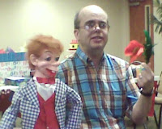

Festus update
9/16/2011
{kind=link}

From Russell Baker:
I wanted to let you know that Festus arrived. Thank you for the great and quick work that you did on him! My wife, Debbie, and I are thrilled at how the upgrade gave Festus a new look. I have always considered the construction or repair of a figure to be just as much an art as learning the technique of ventriloquism itself, and this is a case in point. And he arrived just in time to add him to the entertainment portion of a benefit program the church where I am pastor is doing to raise money for ceiling repairs in the sanctuary. Thank you again for the repairs and the upgrade.
I wanted to let you know that Festus arrived. Thank you for the great and quick work that you did on him! My wife, Debbie, and I are thrilled at how the upgrade gave Festus a new look. I have always considered the construction or repair of a figure to be just as much an art as learning the technique of ventriloquism itself, and this is a case in point. And he arrived just in time to add him to the entertainment portion of a benefit program the church where I am pastor is doing to raise money for ceiling repairs in the sanctuary. Thank you again for the repairs and the upgrade.